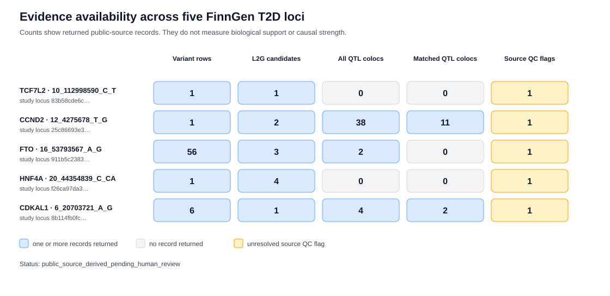

Candidate genes returned by Open Targets
The L2G score is an existing Open Targets machine-learning score. TSS distance measures the lead variant's distance to a gene's transcription start site among returned candidates.
A five-region research note
I organised existing Open Targets evidence for five FinnGen regions to compare the variants, candidate genes and molecular signals returned for each one.
Source: Open Targets 26.09 · FinnGen R12 type 2 diabetes · retrieved 25 September 2026 · five selected regions
Genome-wide association studies can identify regions associated with type 2 diabetes, but a regional signal does not by itself identify the responsible variant or gene. This project organises existing public evidence from Open Targets release 26.09 for five selected regions from the FinnGen R12 type 2 diabetes study. It brings together 65 fine-mapped variant rows, 11 Locus-to-Gene candidates and 44 molecular-QTL colocalisation rows while preserving source identifiers, missing values, pagination checks, response hashes and quality-control warnings.
Variant PIP, L2G score, COLOC-PIP H4 and eCAVIAR CLPP remain separate because they describe different models and cannot be treated as one causal probability. The result is an auditable explorer and downloadable dataset for examining how variant, gene-ranking and molecular evidence differ across regions. It is a bounded descriptive case study, not causal-gene validation, a clinical target ranking or an analysis of participant-level data.
The saved records come from the Open Targets Platform and cover selected FinnGen R12 type 2 diabetes regions. They describe genetic and molecular-study results. They do not contain participant-level records, patient histories or individual genotypes, and they are not the complete FinnGen GWAS summary-statistics download.
The page follows the same question through four steps. Each step narrows or compares evidence; none of the steps proves that a gene causes diabetes.
The chart counts records returned by the source. A larger count means that more records were available to inspect; it does not mean stronger biological support.

The L2G score is an existing Open Targets machine-learning score. TSS distance measures the lead variant's distance to a gene's transcription start site among returned candidates.
H4 and CLPP are method-specific colocalisation statistics and remain separate. Missing source values remain missing.
These definitions describe how the terms are used on this page.
This project retrieved existing source results, checked response integrity and completeness, preserved missing values, derived lead-variant-to-TSS distances, and built the downloadable tables and explorer. It did not run a new GWAS, fine-mapping model, expression analysis or causal-gene model.
Evidence JSON SHA-256
49e73e407ba8a062c7b0a32f145233d24505dd381e675c550e5ba76267f5c821
Internal record status
public_source_derived_pending_human_review
Case-study metadata and output hashesFive-region evidence JSONRetrieval auditDerived case-study table